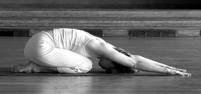

Баласана — довольно простая поза, которая выполняется, зачастую, для
в промежутке между выполнением других поз. «Бала» — на Санскрите означает «ребенок»,
а «асана»- поза. Есть еще один вариант названия этой позы — ананда баласана, которую
можно перевести, как «поза счастливого ребенка» или «приятная поза ребенка» — ну,
как-то так. 🙂Техника выполнения позы ребенкаВстаньте на коврик для йоги, ноги вместе
— это исходное положение. На выдохе опуститесь на колени (колени и стопы вместе,
большие пальцы ног соприкасаются), затем сядьте на пятки. Расслабьтесь. На медленном
вдохе поднимите руки над головой, и с выдохом опустите их на пол перед собой, вместе с
этим наклоняясь вперед, опуская грудную клетку на ноги, и касаясь лбом пола. Это
конечное положение.Постарайтесь полностью расслабиться, дышите нормально. Оставайтесь в этой позе в
течение 5-8 полных дыханий или так долго, пока вам удобно. Выходя из позы, на вдохе
поднимите руки и тело в вертикальное положение (руки поднимаются над головой), на
выдохе опустите руки, вдохните, и на выдохе встаньте в исходное положение
На что обратить внимание

Прежде всего, это, конечно, дыхание — оно должно быть спокойным, достаточном
глубоким и не напряженным. Можно даже представлять, как с каждым вдохом в ваше тело
проникает энергия (прана), как с каждым выдохом ваша спина и плечи расслабляются.
Вообще, визуализация — штука рабочая, например, в том же цигун она вовсю используется,
и дает свои плоды.Расслабление — это ключевой аспект этой позы. В конечном положении
ваm нужно расслабиться, насколько это возможно. В идеале — даже не цепляться за поток
мыслей, а просто быть сторонним наблюдателем. Для того, чтобы достичь хорошего
расслабления, сочетайте его с дыханием, а точнее — представляйте, как с каждым выдохом
ваше тело становится все более расслабленным, как будто оно наливается теплом и
«растекается».
Поза ребенка — польза
-Баласана снимает напряжение в спине, плечах и грудной области.
-Она снимает усталость и помогает при головокружении, а также снижает стресс и беспокойство.
-Улучшает кровоснабжение мозга.
-В сочетании с глубоким дыханием нижним отделом диафрагмы, эта асана мягко массирует внутренние органы, при этом оказывает воздействие на позвоночник, бережно растягивая его.
-Снимает боль в шее и поясничной области (можно использовать йога пропсы для поддержки).
-Поза ребенка уравновешивает дыхание, успокаивает тело и ум.
Замечания и противопоказания
Травма колена: вставайте на колени осторожно, между ногами можно положить подушки
или сложенное одеяло.Высокое кровяное давление: под голову нужно подкладывать подушку,
кулаки или йога блок (кирпич для йоги), чтобы голова оставалась на уровне сердца, а
не ниже его.Беременность: колени не соединяйте вместе, а разведите их на ширину
бедер, как во втором варианте. Возможно, понадобится подушка для поддержки. Вообще,
во время беременности всегда консультируйтесь с врачом, перед тем, как заниматься
йогой или другими упражнениями.